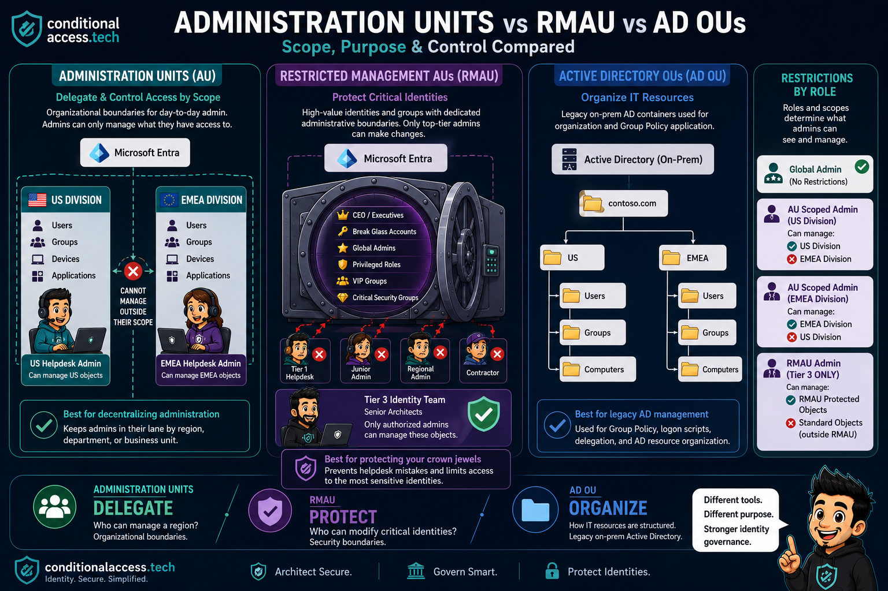
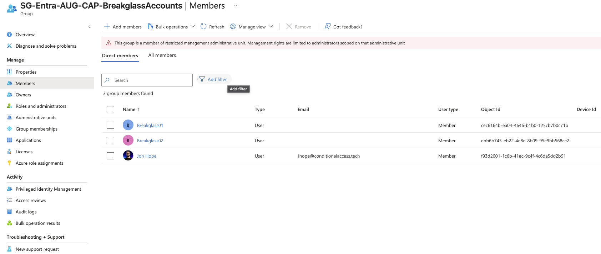
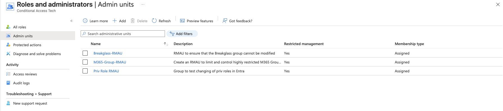
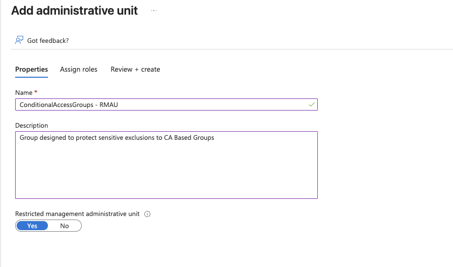
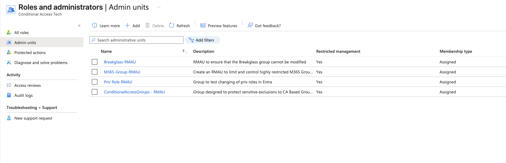
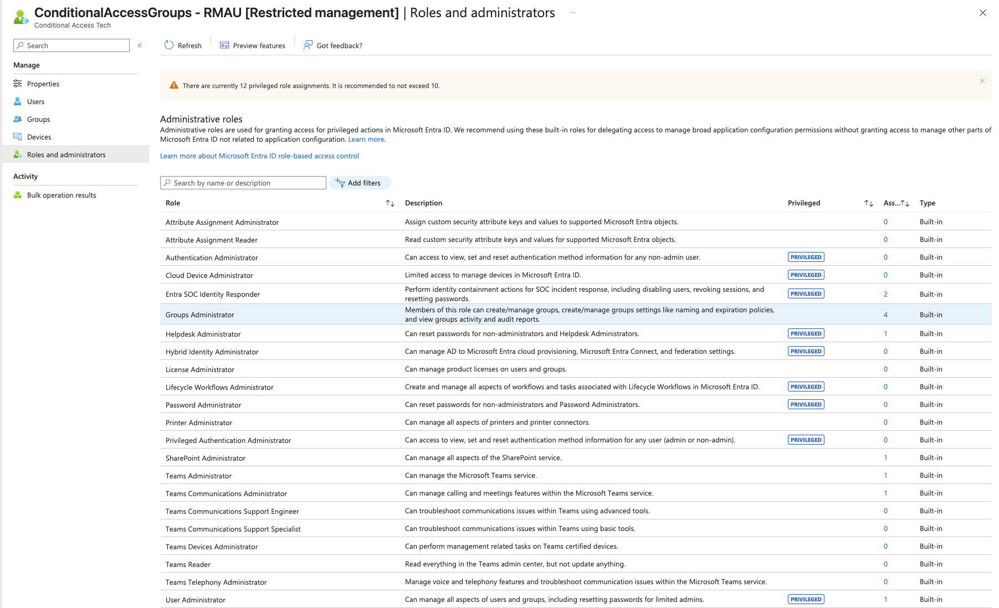
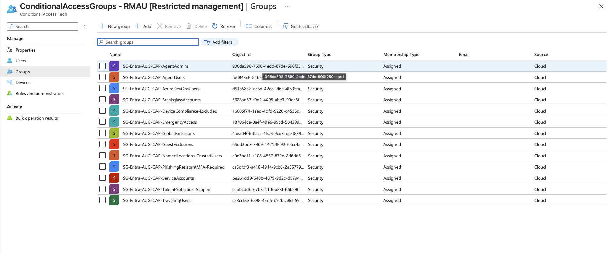

The problem with having extremely smart and talented coworkers is they are often right when they discuss topics with you. Last week Lewis and I were discussing RMAUs and the consensus was most MSPs don't actually know what they are or how they function. I was like, sure they do. Everyone uses RMAUs. Turns out I was wrong.
A quick poll of MSPs showcased a simple fact: AUs and RMAUs are not as typical as I thought.
The main users of RMAUs from that poll? Myself and Jay. Most responses were either "not using them" or "What is an RMAU?" Being that Jay is one of the most well respected Cybersecurity Architects in the game with a proven track record of doing awesome things from a security perspective, I'd say I'm killing it.
Here is the official breakdown from Microsoft. The definitions are accurate as long as Microsoft's documentation is correct. That's not the point of the article though. The point is to demystify and provide context. The "Jon Hope angle," if we shall.
Microsoft Learn
The Official Definitions
Administrative Unit
AU: Administrative Unit
learn.microsoft.com / administrative-units"An administrative unit is a Microsoft Entra resource that can be a container for other Microsoft Entra resources. An administrative unit can contain only users, groups, or devices. Administrative units restrict permissions in a role to any portion of your organization that you define."
The core use case is delegated administration: scoping admin roles like Helpdesk Administrator or User Administrator so they apply only to a subset of the tenant, not the whole directory.
Key constraints: AUs cannot be nested. They are not available in Entra ID Governance features. Adding a group to an AU does not automatically bring its members into scope.
Restricted Management Administrative Unit
RMAU: Restricted Management Administrative Unit
learn.microsoft.com / admin-units-restricted-management"Restricted management administrative units allow you to protect specific objects in your tenant from modification by anyone other than a specific set of people that you designate. This allows you to meet security or compliance requirements without having to remove tenant-level role assignments from your administrators."
The key difference from a standard AU: an RMAU blocks even Global Administrators and Privileged Role Administrators from modifying objects inside it at tenant scope. Only admins explicitly assigned a role scoped to that RMAU can make changes. GA and PRA can still manage the RMAU itself (add/remove members, assign roles) but cannot modify the objects within it.
- The restricted setting is permanent and cannot be changed after creation
- Maximum 100 RMAUs per tenant
- Incompatible with Entra ID Governance: PIM, Entitlement Management, Lifecycle Workflows, and Access Reviews all blocked
- Only Security groups and Users/Devices can be members. M365 Groups, Distribution Groups, and Mail-Enabled Security Groups cannot
- Graph application permissions do not apply inside an RMAU by default
The Jon Hope Angle
AUs: The Cloud Equivalent of Active Directory OUs
The fact is AUs and RMAUs are, to me, a natural evolution of what Active Directory attempted to accomplish. It used OUs to create a directory structure and limit access or policies based on roles and departments. Keep in mind Entra is a flat directory. The cloud doesn't function like AD, and thank god for that.

That picture is worth more words than what I'll inevitably write, but the idea is simple: being able to delegate access based on region, department, or role.
Simple use case. We used Admin Units to restrict the network guys to on-premise NUK pollers that were used as a network object in Intune. I didn't want the network guys going in and rebooting Endpoints that the endpoint guys were managing. Let's be honest, I was Infrastructure, Endpoint and Security, but needless to say I wanted our network guys to be able to reboot and manage their own device if it hung or they needed the LAPS password. An Admin Unit ensures this is possible without providing access to everything else.
In short: it provides a clean way to limit access based on needs. Nothing more, nothing less.
Locking It Down
Ok, What About RMAUs?
Again, a lot of verbiage in the definitions above and it's all accurate, but the short and simple is: I need to lock things down, and this is how you do it. With a catch.
RMAUs are extremely sensitive containers that have to be carefully determined in terms of how they will be managed. The idea for me was simple: I had people who could exclude objects and groups, but there were certain groups that needed approval and a higher degree of control. I'm doing an entire masterclass deep dive on groups over on conditionalaccess.tech and RMAUs will play a big role in that.
At a high level: I needed to control who had the ability to modify sensitive groups for CA.
Think CA Exclusion Groups. I want complete control over my break glass group. I know, I know Jay, don't use groups for break glass. We'll examine that further in the Groups Deep Dive. However, if you do use groups, protect them with RMAUs. This is explicit control.
The idea is to be intentional with security. Global Admins will even find they are restricted, and honestly just enabling the RMAU most will go "what the crap, I can't add users" and just stop when they see this message:

The real OGs know that with GA comes great responsibility, and that they could add themselves to the Admin Unit, thus bypassing the restriction. So again, control who has the ability and roles needed to bypass the hurdles you put in place. The gate only works if you control who has the key.
Intune still works. A common assumption is that an RMAU locks out device management entirely. It does not. Applying Intune policies to a device inside an RMAU is explicitly allowed. The restriction is Entra property modification only. Your endpoint team keeps full Intune scope.
A note on GA bypass: Global Administrators and Privileged Role Administrators can assign themselves a role scoped to the RMAU, which gives them access. This action is auditable. Make sure you're watching your audit logs for Add member to role scoped over Restricted Management Administrative Unit.
Quick Reference
AU vs RMAU: Side by Side
| Capability | AU | RMAU |
|---|---|---|
| Delegate scoped admin roles | Yes | Yes |
| Blocks tenant-level Global Admins from modifying objects | No | Yes |
| Dynamic membership (users/devices) | Yes | Yes |
| Supports M365 Groups as members | Yes | No |
| Compatible with PIM / Entitlement Management | No | No |
| Setting changeable after creation | Yes | No, permanent |
| Tenant limit | No hard limit | 100 max |
| License required | Entra P1 (admins) | Entra P1 (admins) |
Tutorial
How the Heck Do I Do It?
It's actually really simple. I did an in-depth article that I'm not gonna completely rehash here:
Jon's Medium article: SecureCloudFoundation: Not Another Breakglass
This one by Jan Bakker is even better on how to really set it up. In fact this is what I used to learn more about them and test in a lab environment, which I recommend before moving to prod:
Jan Bakker: Prevent Conditional Access Bypass with Restricted Management Administrative Units in Entra ID
Here's a quick walkthrough though.
-
1
Login to Entra, then Roles and Administration
Navigate to the Microsoft Entra admin center and head to Roles and administrators in the left nav. Select Admin units from the menu.

-
2
Create an RMAU and flip the toggle
Hit Add, give it a meaningful name tied to what you're protecting, and set the Restricted management administrative unit toggle to Yes. That single toggle is what separates an AU from an RMAU. Thanks for the assist Owen.

Remember: This setting is permanent. Once created as an RMAU it cannot be converted back to a standard AU. Plan accordingly and test in a lab first.
-
3
Confirm it is live
Head back to Admin units and you'll see it listed with Restricted management set to Yes. That's it. It's in.

-
4
Assign roles scoped to the RMAU
Jan digs into some specifics around assigning membership to it. Specific roles can be assigned directly to RMAUs. I typically use Groups Administrator for users managing the RMAU. This might be an SC-300 question, I don't know, but good knowledge to have none the less.

-
5
Add your Groups to restrict
Then add the Security Groups you want to protect. These are the objects no tenant-level admin can touch without explicit RMAU scope. Notice every group here is a CA exclusion or control group.

Bottom Line
When to Use Each
Administrative Units
Use when you need to control what admins can see and manage
AUs are ideal for controlling administrative access by department, region, or business unit. The helpdesk team for the US division manages US objects. The network team manages network devices. Nobody manages outside their lane. It is delegation by design, not trust by default.
The guardrail here is scope. Admins still have their role, they just cannot apply it outside the boundary you define.
Restricted Management Administrative Units
Use when certain objects must not be touched by anyone without explicit approval
RMAUs are ideal when you need to protect specific groups, users, or devices from modification by any admin who has not been explicitly granted access at the RMAU scope. This includes junior tiers, contractors, and yes, Global Admins acting at tenant scope.
The guardrail here is protection. CA exclusion groups, break glass accounts, privileged role groups. These are the crown jewels. RMAU ensures that even well-intentioned admins cannot inadvertently modify what should never be touched without deliberate, auditable action.
AUs control who manages what. RMAUs control who can touch the things that matter most. Both are guardrails. Neither replaces good judgment.
See the image at the beginning of the article. Now you have mastered, well, are using RMAUs and AUs.
Would love for others to reach out and tell me how you use AUs or RMAUs. I have to imagine more people than what that poll showed are actively using them, but it definitely showed that it's not as typical as I initially thought. It all goes back to: security is hard. Our job is to be intentional and understand why and what we are doing. Lord knows AI makes things up sometimes. It's a true blessing and a curse.
Get out there and start protecting your critical identities.
If you liked what you saw here or just appreciate a good meme, go check out the Groups Deep Dive on conditionalaccess.tech. Soon to be released.
If you get there before I finish it, wait a day and check again. Same as I do with my bank account waiting for payday.